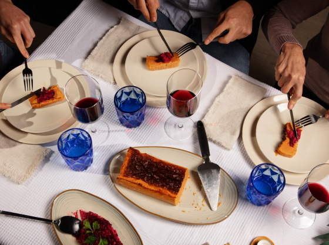

From Starters to Desserts: Crafting a Memorable Dinner Party Menu
Crafting a memorable dinner party menu is an art form that combines creativity, culinary skill, and consideration for your guests' tastes and preferences. Whether you're hosting an intimate gathering or a lavish affair, the menu sets the tone for the entire evening. Here's how to create a dinner party menu that will leave a lasting impression:
1. Consider Dietary Restrictions: Before planning your menu, take into account any dietary restrictions or allergies among your guests. Offer a variety of options to accommodate different dietary preferences, including vegetarian, vegan, gluten-free, and nut-free dishes.
2. Start with Appetizers: Kick off your dinner party with a selection of appetizers to tantalize your guests' taste buds. Choose a mix of hot and cold starters, such as bruschetta, stuffed mushrooms, charcuterie boards, or shrimp cocktail, to provide variety and cater to different palates.
3. Plan a Balanced Main Course: When selecting the main course, aim for a balanced menu that includes options for meat lovers, seafood enthusiasts, and vegetarians alike. Consider offering a choice of two or three entrees to accommodate different tastes and dietary restrictions.
4. Highlight Seasonal Ingredients: Incorporate seasonal ingredients into your menu to showcase the freshest flavors of the season. Not only does this enhance the taste and quality of your dishes, but it also adds a seasonal flair to your dinner party menu.
5. Don't Forget the Sides: Elevate your main course with a selection of delicious side dishes that complement the flavors of the entrees. From roasted vegetables and flavorful grains to creamy mashed potatoes and crisp salads, the right sides can enhance the overall dining experience.
6. Save Room for Dessert: No dinner party is complete without a decadent dessert to satisfy your guests' sweet cravings. Consider serving a variety of desserts, such as a rich chocolate cake, fruity tart, or creamy cheesecake, to cater to different preferences.
7. Offer Refreshing Beverages: Pair your dinner party menu with a selection of refreshing beverages to complement the flavors of the food. Consider serving a signature cocktail, a curated wine pairing, and non-alcoholic options such as sparkling water or fruity mocktails.
8. Create a Theme or Concept: Infuse your dinner party menu with a theme or concept to add a unique touch to the event. Whether it's a rustic Italian feast, a Mediterranean-inspired spread, or a gourmet tasting menu, a cohesive theme can tie the menu together and create a memorable dining experience.
9. Presentation Matters: Pay attention to the presentation of your dishes to create an impressive visual impact. Garnish plates with fresh herbs, edible flowers, or artistic drizzles of sauce to add a touch of elegance and sophistication to your dinner party menu.
10. Consider Dietary Preferences: Take into account the dietary preferences and restrictions of your guests when planning your menu. Offer vegetarian, vegan, and gluten-free options to ensure that everyone can enjoy the meal without any dietary concerns.
In conclusion, crafting a memorable dinner party menu requires careful planning, attention to detail, and consideration for your guests' tastes and preferences. By incorporating a variety of flavors, highlighting seasonal ingredients, and paying attention to presentation, you can create a dining experience that will delight your guests and leave a lasting impression.